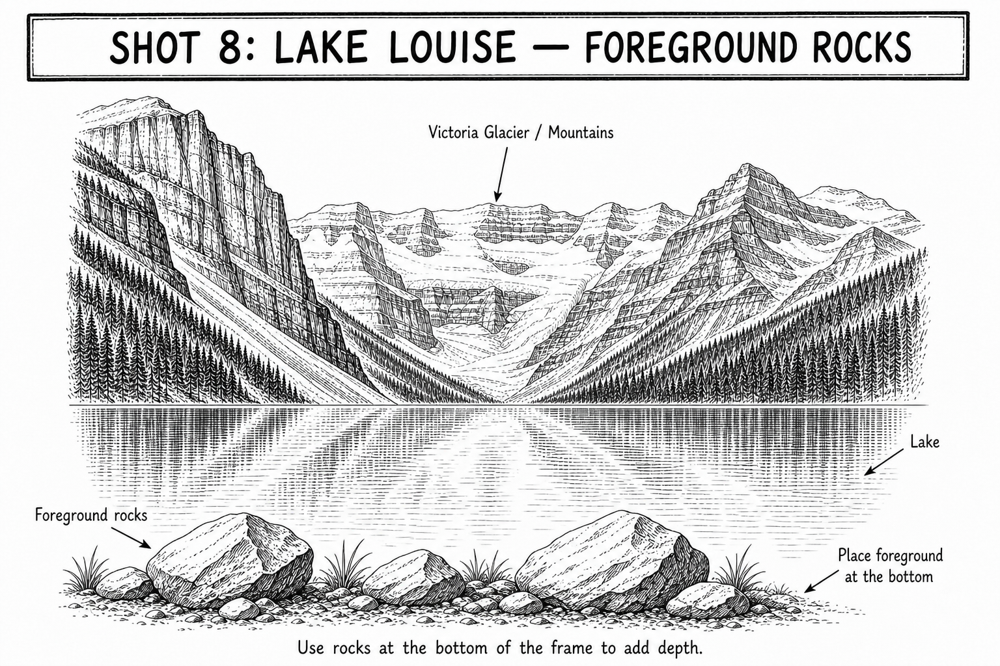

Start here
Av | Aperture f/8 | ISO Auto
How to take it
- Choose a few shoreline rocks that lead into the lake instead of filling the whole bottom edge.
- Keep enough turquoise water and the glacier visible beyond the rocks.
- Put the AF point on a crisp rock edge or distant mountain edge, not on flat water.
- Half-press and confirm the chosen edge is sharp before pressing fully.
- Take one frame with the rocks and one without them; keep the version that feels less cluttered.
Focus this shot
Place it: Put the AF point on a crisp rock edge or distant mountain edge, not on flat water.
Look for: The chosen rock or mountain edge should look crisp when the camera confirms focus.
If this happens
| Rocks take over | Step back or use fewer rocks; they should guide the eye toward the lake. |
|---|---|
| Camera will not focus | Use a high-contrast rock or mountain edge, not the lake surface. |
| Sky is washed out | Try -1/3 exposure compensation and compare. |
| Picture is blurry | Brace the camera and raise ISO if the shutter speed is below 1/125. |
Tips
- Keep foreground rocks at the bottom, not across the center of the lake.
- Look at the frame edges before shooting so a partial rock does not feel accidental.